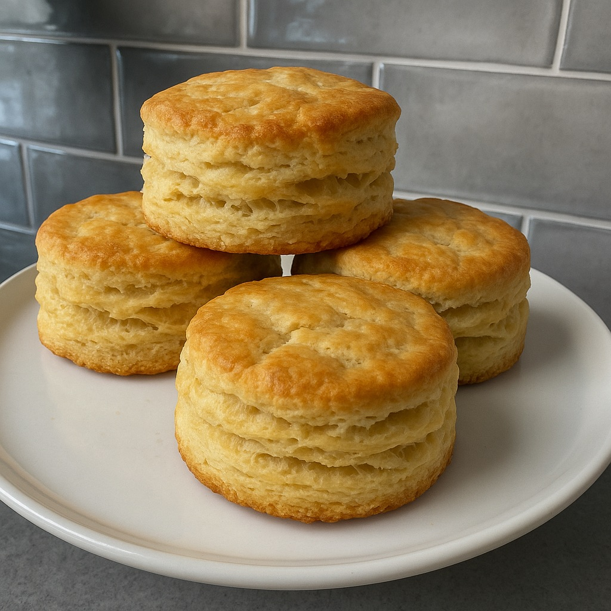

Home
JP's Big Daddy Biscuits

Our family's favorite banana muffins
These biscuits from Allrecipes.com are literally the BEST. My southern mother-in-law put her stamp of approval on them, and I haven't changed them since. The only thing I add: Place the rounds so they are touching each other and they'll rise even higher than the original recipe!
Dry Ingredients
- 2 c all purpose flour
- 1 T baking powder
- 1 t salt
- 1 T sugar
Wet Ingredients
- 1/3 cold butter, cubed
- 1 c milk
Steps
- Preheat oven to 425F
- In bowl, whisk together dry ingredients
- Cut in butter until crumbly
- Gradually stir in milk until dough pulls away from bowl
- Turn dough out onto floured surface, knead 10-15x
- Pat or roll dough to 1 inch thick
- Cut with round cutter dipped in flour
- Place rounds touching on un-greased cookie sheet
- Bake 13-15 mins and test for doneness